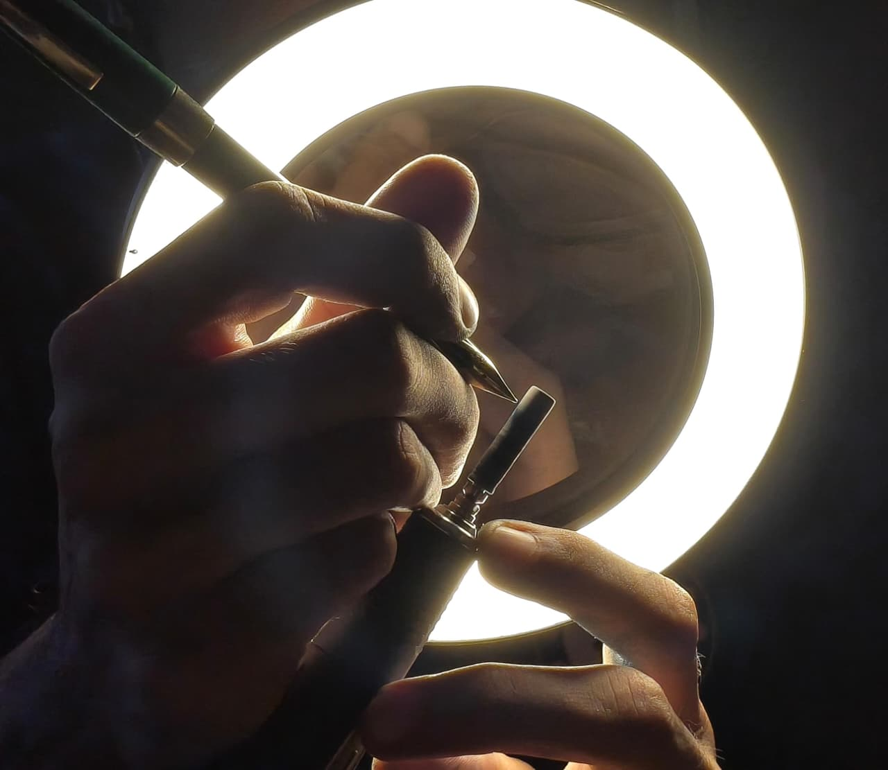

The Artisan Story
Introduced to this niche world through trial & error.
My journey began with repairing and restoring old and broken pens
Along the years, I encountered a bunch of minor injuries that constantly changed the way I write. Some time around 2023, I started experimenting with my own pens' nibs.
Nib modification, to me, is very precise work, albeit minute. The way it changes a pen's nature is magical.
The philosophy remains simple: Make your pen fit YOU.
